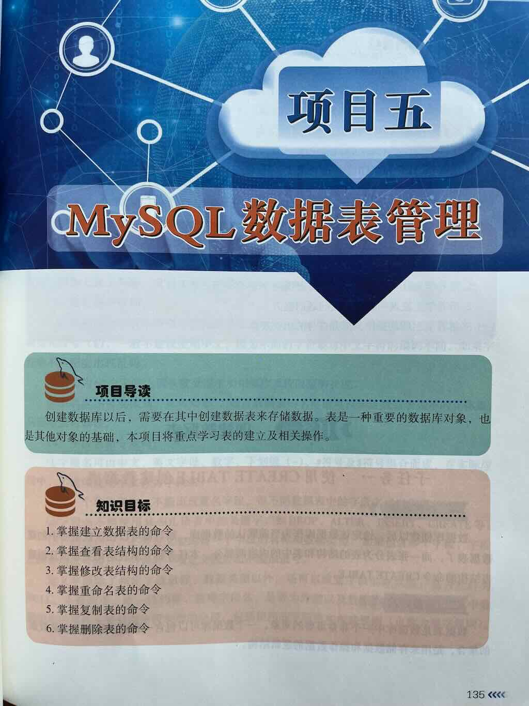
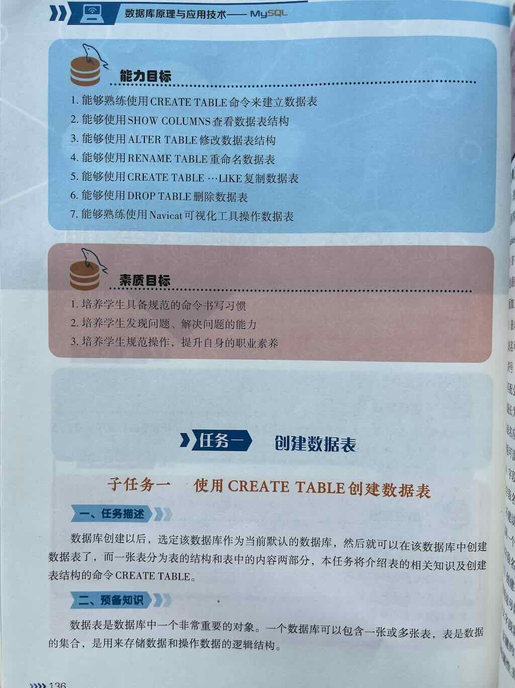
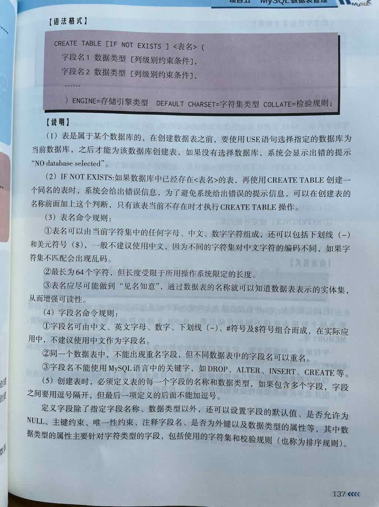
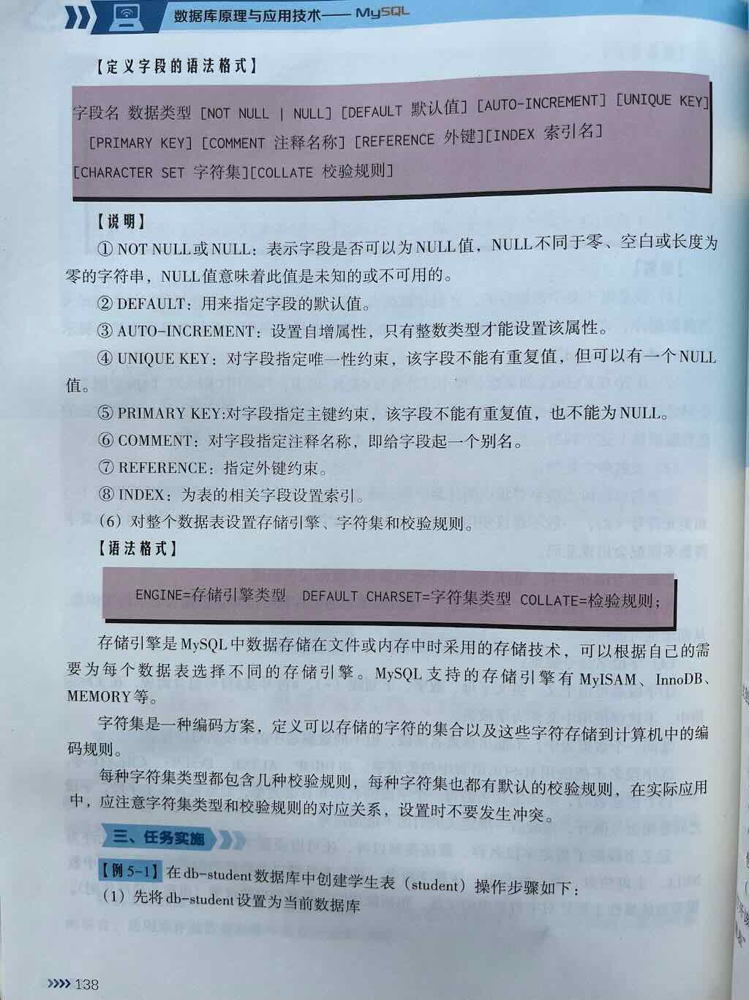
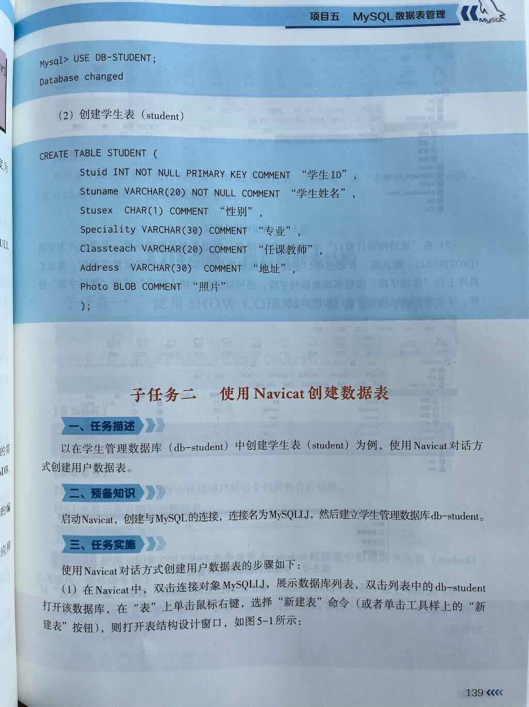
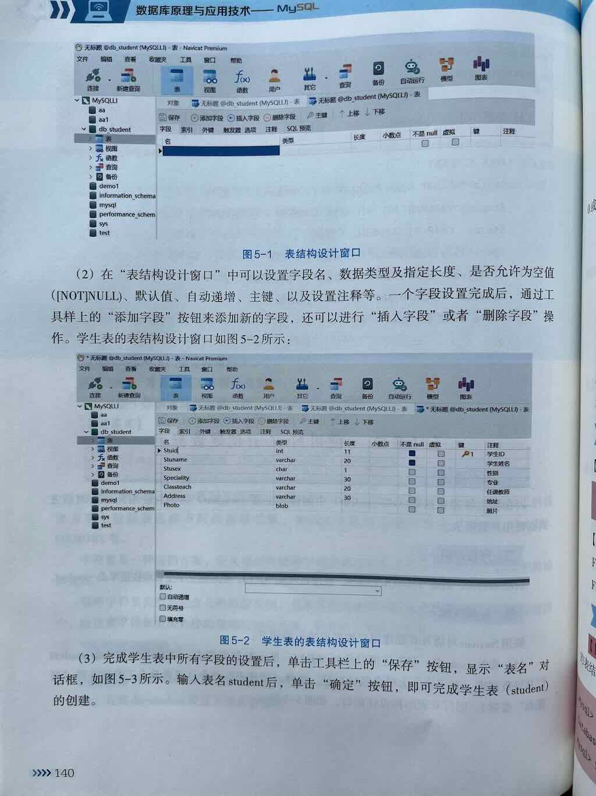
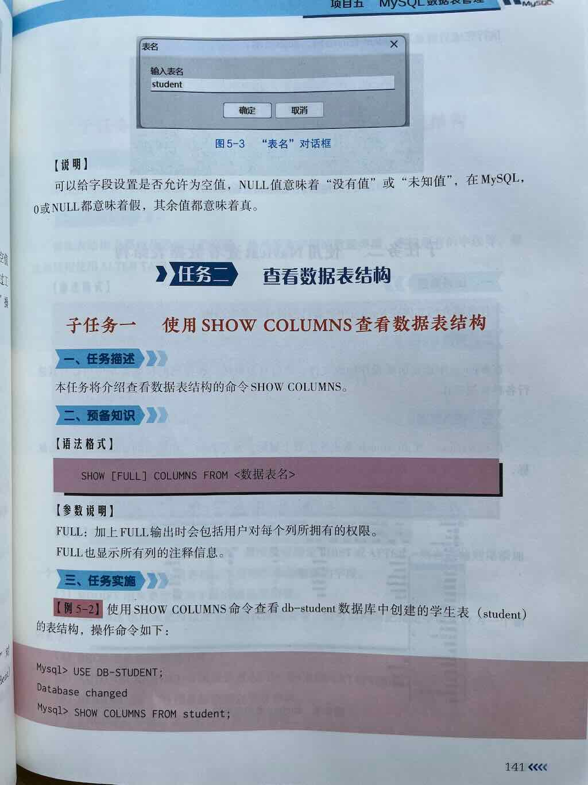

创建数据表







数据库的构成¶
在创建数据库表之前，你首先要清楚数据库的构成，MySQL的数据结构：
- 数据库：由多个表组成。
- 表：多条记录构成了一个表。一个表包含多条记录。
- 列：包括字段和值。
- 记录：一条记录包括多个项目的值。
数据库表的形式¶
一个数据库由一个或多个表组成。表的形式如下：
| id | 姓名(name) | 年龄(age) | 性别(gender) | 入学日期(the_date) |
|---|---|---|---|---|
| 1 | 张三 | 16 | 男 | 2024-09-01 |
| 2 | 李四 | 17 | 女 | 2024-09-01 |
| 3 | 王五 | 16 | 男 | 2024-08-31 |
定义
表是以行和列的形式存储数据。创建表就是定义列的过程。一个列分为三部分：
- 列名
- 数据类型
- 约束条件
创建数据表的语法¶
说明：
- 列名：建议小写，不能以数字开头
- 数据类型：用来存储不同类型的数据。比如：字符串、整数、日期
- 约束条件：用来对存储的数据进行约束。比如：不能为空、必须唯一等
语法
示例
CREATE TABLE student(
id INT AUTO_INCREMENT PRIMARY KEY,
name VARCHAR(20) NOT NULL,
age INT,
gender ENUM('男','女'),
the_date DATE
);
说明
INT |
示整数类型，用于创建整数存储。 |
|---|---|
VARCHAR(20) |
表示变长字符串类型，用于创建字符串存储。 |
ENUM('男','女') |
表示字符串值列表，用于创建字符串存储。 |
DATE |
表示日期类型，用于创建日期存储。 |
PRIMARY KEY |
主键，用于标识一行，具有唯一性。 |
AUTO_INCREMENT |
自动增长，约束整数类型自动递增，无需再手动输入。 |
NOT NULL |
非空，不允许填写空值。 |
注意事项：
- 数据库名、表名、列名全部建议小写，并且不能以数字开头。
- 所有的SQL语句建议大写。
- 所有标点符号必须是英文输入法下的符号。如：圆括号
()、逗号,、分号;
MySQL 定义表的基本语法¶
CREATE TABLE [IF NOT EXISTS] 表名 (
-- 列定义
列1 数据类型 [列约束],
列2 数据类型 [列约束],
-- 表级约束
[PRIMARY KEY (列名)],
[FOREIGN KEY (外键列) REFERENCES 父表(父表列)],
[UNIQUE (列名)],
[CHECK (条件表达式)]
)
[ENGINE=存储引擎]
[DEFAULT CHARSET=字符集]
[COMMENT='表注释']
[其他表选项];
创建表的完整过程¶
-- 创建数据库
CREATE DATABASE 数据库名;
-- 创建表语法
CREATE TABLE 表名 (
列名1 数据类型 [约束条件],
列名2 数据类型 [约束条件],
列名3 数据类型 [约束条件]
);
-- 设置默认值
CREATE TABLE 表名 (
列名 数据类型 DEFAULT 默认值,
...
);
CREATE TABLE users (
id INT AUTO_INCREMENT PRIMARY KEY,
username VARCHAR(50) NOT NULL DEFAULT 'guest',
created_at TIMESTAMP DEFAULT CURRENT_TIMESTAMP
);
操作数据结构¶
操作数据库，就是指操作数据结构和数据。
- 数据结构：组织数据的方式
- 数据：就是记录。一个记录由多个项目构成，一个记录就是一条数据。
关键词
- 创建数据结构：CREATE
- 修改数据结构：ALTER
- 删除数据结构：DROP
- 查询数据结构：SHOW